1. ソフトウェアとハードウェアの準備
ソフトウェア：VMware を推奨します。私は VMware 12 を使用しています
イメージ：CentOS6。イメージがない場合は Alibaba Cloud（阿里云）でダウンロードできますhttps://mirrors.aliyun.com/centos/
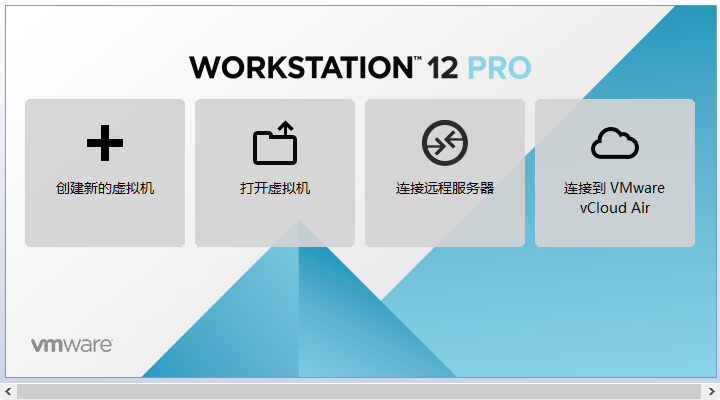
ハードウェア：ホストマシン上で仮想化ソフトウェアを実行して CentOS をインストールするため、ホストマシンの構成に一定の要件があります。最低でも I5 CPU デュアルコア、ハードディスク 500G、メモリ 4G 以上が必要です。
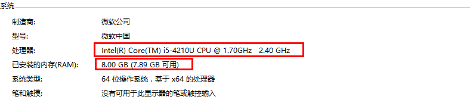
2. 仮想マシンの準備
1. VMware を開き、新しい仮想マシンを選択します

2. 標準インストールとカスタムインストール
標準インストール：VMware が主流の構成を仮想マシンのオペレーティングシステムに適用するため、初心者に非常に優しいです。
カスタムインストール：カスタムインストールでは、特定のリソースを強化し、不要なリソースを削除できます。リソースの無駄を避けられます。
ここではカスタムインストールを選択します。
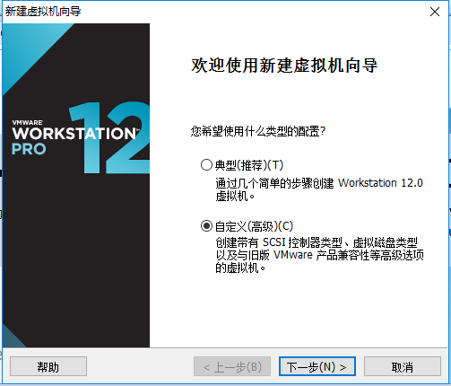
3. 仮想マシンの互換性の選択
ここでは互換性に注意する必要があります。VMware12 で作成した仮想マシンを VM11、10 またはそれ以前のバージョンにコピーすると、互換性の問題が発生する場合があります。VMware10 で作成した仮想マシンを VMware12 で開く場合は、互換性の問題は発生しません。
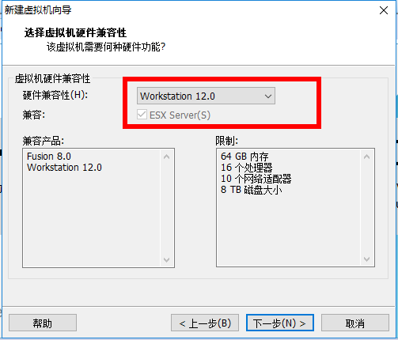
4. 後でオペレーティングシステムをインストールするを選択
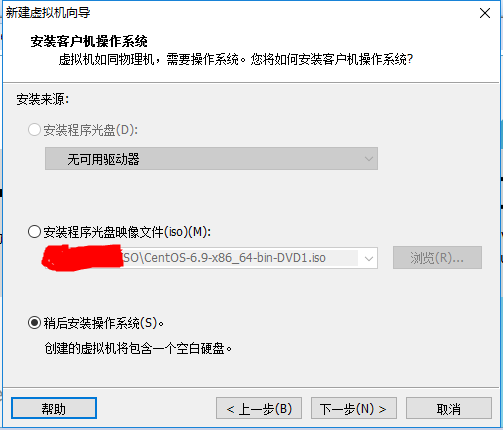
5. オペレーティングシステムの選択
ここで後でインストールするオペレーティングシステムを選択します。正しく選択すると、vm tools の互換性が向上します。ここでは Linux の CentOS を選択します。

6. 仮想マシンの場所と名前
仮想マシン名は単なる名前で、仮想マシンが多いときに見つけやすくなります。
VMware のデフォルトの場所は C ドライブですが、ここでは F ドライブに変更します。

7. プロセッサーとメモリの割り当て
プロセッサーの割り当ては、実際のニーズに応じて行います。使用中に CPU が足りなくなった場合は、後から追加できます。今回は CentOS インストールのデモのみ行うため、プロセッサーとコアは両方とも 1 を選択します。
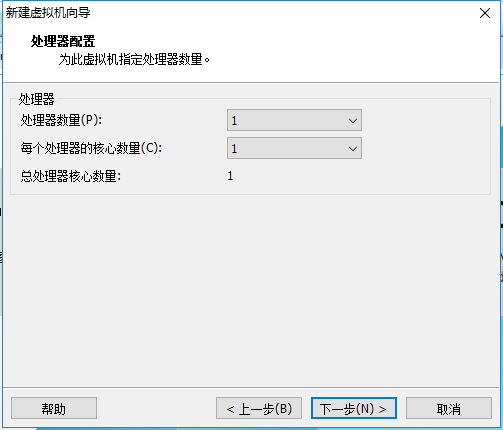
メモリも実際のニーズに応じて割り当てます。私のホストマシンのメモリは 8G なので、仮想マシンには 2G のメモリを割り当てます。
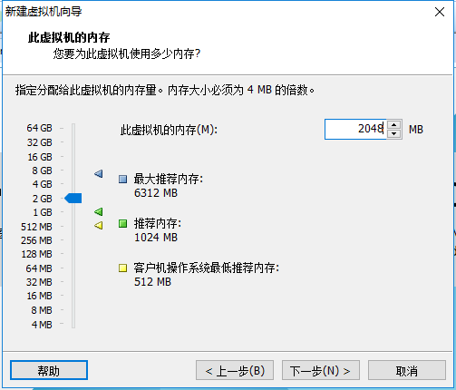
8. ネットワーク接続タイプの選択。ネットワーク接続タイプは、ブリッジ、NAT、ホストオンリー、ネットワークなしの 4 種類があります。
ブリッジ：ブリッジモードを選択した場合、仮想マシンとホストマシンはネットワーク上で対等な関係になり、同じスイッチに接続されていることになります。
NAT：NAT モードでは、仮想マシンがインターネットに接続するには、まずホストマシンを経由して外部と通信する必要があります。
ホストオンリー：仮想マシンとホストマシンが直接接続されます。
ブリッジモードと NAT モードのインターネットアクセス手順は、下図のとおりです。

ブリッジと NAT の違い
ここではブリッジモードを選択します
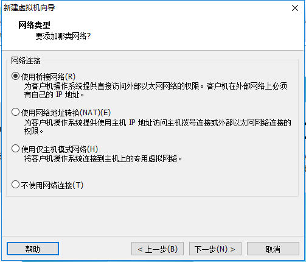
9. 残りの 2 項目は仮想マシンのデフォルトオプションのままで構いません
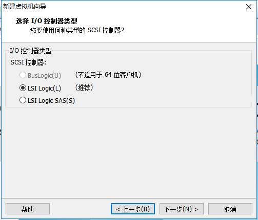
10. ディスク容量
ディスク容量はとりあえず 100G を割り当てれば、後からいつでも増やせます。「すべてのディスクをすぐに割り当てる」にチェックを入れないでください。チェックすると、仮想マシンが 100G を CentOS に直接割り当て、ホストマシンの残りハードディスク容量が減ってしまいます。「仮想ディスクを複数のファイルに分割する」にチェックを入れると、仮想マシンをストレージデバイスでコピーしやすくなります。

11. ディスク名はデフォルトのままで構いません
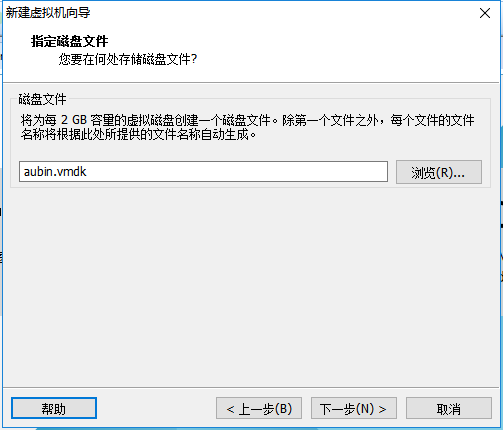
12. 不要なハードウェアを削除
カスタムハードウェアをクリック

サウンドカード、プリンターなど不要なハードウェアを選択して削除します。
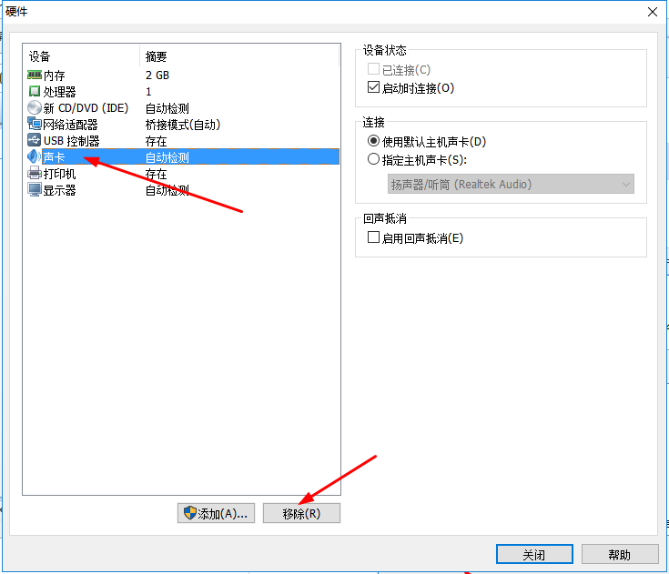
13. 完了をクリックすると、仮想マシンが作成されます。
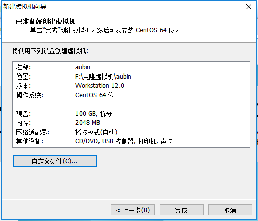
3. CentOS のインストール
1. CD/DVD を接続
作成したばかりの仮想マシンを右クリックし、設定を選択します

まず CD/DVD を選択し、次に ISO イメージファイルを使用を選択し、最後に参照を選択してダウンロードしたイメージファイルを見つけます。起動時に接続に必ずチェックを入れてから OK をクリックします。

2. 仮想マシンを起動
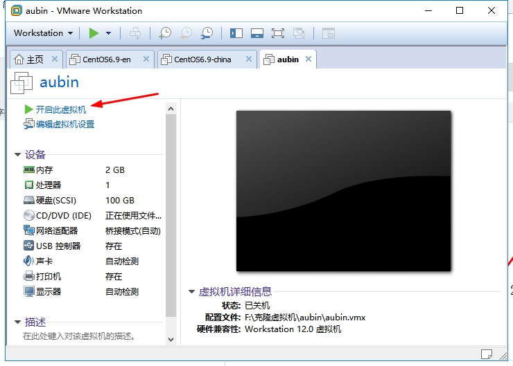
3. オペレーティングシステムのインストール
仮想マシンを起動すると、次の画面が表示されます：
- Install CentOS 7 CentOS 7 をインストール
- Test this media & install CentOS 7 インストールファイルをテストして CentOS 7 をインストール
- Troubleshooting 障害の修復
最初の項目を選択して CentOS 7 を直接インストールし、Enter キーを押すと、次の画面に進みます。

インストール中に使用する言語を選択します。ここでは英語を選択し、キーボードは US キーボードを選択します。Continue をクリックします。

まず時刻を設定します

タイムゾーンで上海を選択し、時刻が正しいか確認します。その後、Done をクリックします。

インストールするソフトウェアを選択します

Server with Gui を選択し、Done をクリックします

インストール先を選択します。ここでディスクのパーティション設定ができます。

「i wil configure partitioning」（パーティションを設定します）を選択し、done をクリックします

下図のように、プラス記号をクリックし、/boot を選択して、boot パーティションに 200M を割り当てます。最後に Add をクリックします。

その後、同じ方法で他の 3 つのパーティションに領域を割り当ててから、Done をクリックします。

すると概要情報が表示されるので、AcceptChanges（変更を受け入れる）をクリックします。

ホスト名とネットワークカードの情報を設定します

まずネットワークカードを有効にし、IP アドレスを取得できるか確認します（ここではブリッジ接続です）。次にホスト名を変更して Done をクリックします。

最後に Begin Installation（インストールを開始）を選択します。

root パスワードを設定します

root パスワードを設定したら Done をクリックします

USER CREATION をクリックして管理者ユーザーを作成します

ユーザー名とパスワードを入力したら Done をクリックします

システムのインストールが完了するのを待って、システムを再起動すれば完了です。

作者：Aubin
リンク：https://www.jianshu.com/p/ce08cdbc4ddb
出典：简书